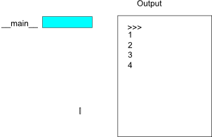

6. Recursion and the Fractal Secrets of the World¶
6.1. Stack Diagrams¶
We have seen that it is possible for one function to call another, but we have not explained the mechanism for how this is possible. Let us start with some example code of one function calling another function.
def print_twice(param):
print param, param
def cat_twice(part1, part2):
cat = part1 + part2
print_twice(cat)
chant1 = "Pie Jesu domine, "
chant2 = "Dona eis requim."
cat_twice(chant1, chant2)
We can represent how the underlying computer is storing information using a stack diagram. Like state diagrams, stack diagrams show the value of each variable, but they also show the function to which each variable belongs.
Each function is represented by a frame. A frame is a box with the name of a function beside it and the parameters and variables of the function inside it. The stack diagram for the previous example looks like this:
The order of the stack shows the flow of execution. print_twice was called by cat_twice, and cat_twice was called by __main__, which is a special name for the topmost function. When you create a variable outside of any function, it belongs to __main__.
Each parameter refers to the same value as its corresponding argument. So, part1 has the same value as chant1, part2 has the same value as chant2, and param has the same value as cat. If an error occurs during a function call, Python prints the name of the function, and the name of the function that called it, and the name of the function that called that, all the way back to the top most function.
To see how this works, create a Python script named tryme2.py that looks like this:
def print_twice(param):
print param, param
print cat
def cat_twice(part1, part2):
cat = part1 + part2
print_twice(cat)
chant1 = "Pie Jesu domine, "
chant2 = "Dona eis requim."
cat_twice(chant1, chant2)
We’ve added the statement, print cat inside the print_twice function, but cat is not defined there. Running this script will produce an error message like this:
Traceback (innermost last):
File "tryme2.py", line 11, in <module>
cat_twice(chant1, chant2)
File "tryme2.py", line 7, in cat_twice
print_twice(cat)
File "tryme2.py", line 3, in print_twice
print cat
NameError: global name 'cat' is not defined
This list of functions is called a traceback. It tells you what program file the error occurred in, and what line, and what functions were executing at the time. It also shows the line of code that caused the error.
Notice the similarity between the traceback and the stack diagram. It’s not a coincidence. In fact, another common name for a traceback is a stack trace.
6.2. Recursion¶
What might be surprising is that we can also write functions that call themselves. This technique is called recursion. Recursion is the first of several techniques that allows us to introduce repetition into our programs. Examine the following code that will print out 3 cheers.
The computer will create new frame for each function call, even when the call is to the same function. Each frame keeps its own copy of the values for each variable. This is why the value of times will eventually become 0.
6.3. Recursion Requirements¶
To properly use recursion you must provide two things in your algorithm.
- A base case that can be answered immediately.
- A recursion call to a smaller version of the problem.
The second requirement whittles away the problem by making it smaller and smaller. The base case ensures that the function will eventually stop. Without the base case, a recursion call would repeat until the computer ran out memory. This is called an infinite recursion.
In the cheers() function, the base case is when times==0. If the caller of the function wants 0 cheers, there is no work to do. We can stop immediately. Note that we used time<=0. This is a safety measure. If the function was called with an argument less than 0, it would trigger an infinite recursion.
In the cheers() function, line 8 contains the recursion call. This is where we make the bigger problem (cheering 3 times) into a smaller problem (cheering 2 times). Note that the only “real work” is done on line 7 where we print out one cheer. One useful way to thing of the cheers algorithms is that we cheer once, and then make a recursive call to cheer for the remaining times. It is only by following the stack diagram that we see why this is a legal way to solve the problem.
Recursion, the high-level view
One way to think about this is to convince yourself that the function works correctly when you call it for the base case. Then do a mental leap of faith, saying “the fairy godmother (or Python, if you can think of Python as your fairy godmother) knows how to handle the recursive level, so I don’t need to think about that detail!” All I need to focus on is how to solve a problem for n=1 if I can assume the base case is already working.
You’re practicing mental abstraction — ignoring the subproblem while you solve the big problem.
If this mode of thinking works (and you should practice it!), then take it to the next level. Aha! now can I see that it will work when called for n=2 under the assumption that it is already working for level 1.
And, in general, if I can assume the n-1 case works, can I just solve the level n problem?
Students of mathematics who have played with proofs of induction should see some very strong similarities here.
6.4. Recursion for Repetition¶
One of the most common things to do with repetition is to repeat an operation a particular number of times, or to perform an operation with a set of consecutive numbers (i.e. from 1 to 10).
Lets create a recursive function called countDown(num) that prints off the numbers from num to 1 each on one line. Since we are using recursion, we need to identify the base case and how to make the count down problem smaller. The base case is usually the easiest to identify. If num is less than 1, we are done.
Determining how to make the problem smaller is usually more difficult. This is because you must usually think of how to define the problem in terms of itself. That is we should start by believing that the function countDown(num) already works. In this case if I want to count down, I can print off num and make a recursion call to print off the remaining num-1 numbers.
Recursion is very sensitivity to the order in which operations are conducted. Lets look at an example. Lets create a recursive function called countUp(num) that prints off the numbers from 1 to num. The base case is similar to the previous problem. If num is less than 1, we are done.
If I want to count up, I need to first print off the lower numbers using a recursion call countUp(num) and then print off my own number.
We can see that the code for countDown() and countUp() differ only in that Lines 7-8 are swapped. If we examine the stack diagram, we can see that the stack does not end until num==0. It is only on the way back down the stack that the printing starts.

No output has occurred yet.
Output starts and frames are removed

6.5. Recursion in Math¶
Several well known mathematical functions are defined recursively. Factorial, for example, is given the special operator, !, and is defined by:
0! = 1
n! = n(n-1)
We can easily code this into Python:
def factorial(n): if n == 0: return 1 else: return n * factorial(n-1)
We can see another behavior in the summation of number from 1 to n.
sum(n) = n+sum(n-1)
sum(0) = 0
1 2 3 4 5 6 7 | def sum(n):
""" sums the numbers from 1 to n """
if(n<1):
return 0
else:
return n + sum(n-1)
|
6.5.1. Case study: Fibonacci numbers¶
The famous Fibonacci sequence 0, 1, 1, 2, 3, 5, 8, 13, 21, 34, 55, 89, 134, ... was devised by Fibonacci (1170-1250), who used this to model the breeding of (pairs) of rabbits. If, in generation 7 you had 21 pairs in total, of which 13 were adults, then next generation the adults will all have bred new children, and the previous children will have grown up to become adults. So in generation 8 you’ll have 13+21=34, of which 21 are adults.
This model to explain rabbit breeding made the simplifying assumption that rabbits never died. Scientists often make (unrealistic) simplifying assumptions and restrictions to make some headway with the problem.
If we number the terms of the sequence from 0, we can describe each term recursively as the sum of the previous two terms:
fib(0) = 0
fib(1) = 1
fib(n) = fib(n-1) + fib(n-2) for n >= 2
This translates very directly into some Python:
1 2 3 4 5 | def fib(n):
if n <= 1:
return n
t = fib(n-1) + fib(n-2)
return t
|
This is a particularly inefficient algorithm, and we’ll show one way of fixing it when we learn about other looping structures:
1 2 3 4 5 6 7 | import time
t0 = time.clock()
n = 35
result = fib(n)
t1 = time.clock()
print('fib({0}) = {1}, ({2:.2f} secs)'.format(n, result, t1-t0))
|
We get the correct result, but an exploding amount of work!
fib(35) = 9227465, (10.54 secs)
6.6. Recursion in Nature¶
There is an important application of recursion found in nature called a fractal. Fractals are patterns which display self similarity at different levels of magnification. For instance the “roughness” of a coastline from space, on a map, or from a plane will be the same. This self-similarity can also be seen in living things like the shapes of the leaves on ferns, mountain ranges, waves, and clouds. Many of the special effects that we see in movies make use of fractal patterns in order to create realistic effects.
Why is this the case? In physical phenomena, like the self-similar appearance of mountain ranges, patterns are created by natural erosive processes that are applied over and over again to alter the landscape. This is very similar to recursion, where the base case is the starting state and the recursion is the application and reapplication of the erosive forces of nature.
Biological fractals are formed from the way that genes are expressed in living things. Each gene is like a function that commands an organism to create a biological structure. As a gene is expressed over and over again, fractal structures are formed. Eventually, regulatory elements of the organism will stop expressing the genes, a base case.
6.7. Drawing Fractals¶
We will wrap up this chapter with drawing fractals using pygame. There are many, many ways to create fractals but we will only focus on 2 sets of (orthogonal) techniques. One set of techniques handles the recursion stopping condition. The other set of techniques handles when the picture is drawn.
6.7.1. Sierpinski Triangle¶
For our first example we will recreate Sierpinski’s triangle.
In keeping with good design, common elements have been placed in helper functions. calcMidpoints() finds the mid point of points a and b. drawTri() provides a convenience call to draw.polygon. The bulk of the work is in the sierpinskiDepth() function. As it is a recursive function, we have two parts to contend with: the base case and making the problem smaller.
The base case is conducted with the use of the depth parameter. Depth is decremented for each additional call. Eventually, depth will be 0 and the recursion will stop. This is very similar to the countDown() function we created at the beginning of the chapter. Once the end of the recursion is reached, a triangle is drawn.
The recursive part is different from what we saw previously. At each recursion, sierpinskiDepth() makes three calls. Each call describes a smaller triangle, as seen below.
Our previous code requires the caller to set the depth to which the recursion will run. Our next code segment makes a slight alteration to allow the recursion itself to figure out when there is not need to continue. In this case, when the resulting triangles are so small they cannot be drawn effectively. There is no reason to continue recursion, it will produce no visual benefit. This also means that no matter how big the original triangle is, the detail will be as fine as the resolution of the screen will allow.
To enable this to happen we have added one helper function calcDistance(). Then we created a new function called sierpinskiDist() which is very similar to sierpinskiDepth(). The changes are the lack of depth as a parameter and the stopping conditions for the recursion on lines 12-13.
6.7.2. Fractal Balls¶
In the Sierpinski Triangle we only draw in the base case. Our next example demonstrates a fractal in which we draw for every level of recursion. This example uses the radius of the balls to determine the stopping condition. We pass the angle from the center, the distance from the center, and how big the ball should be as parameters. Each recursion call draws two circles across from each other. You might want to brush up on your trigonometry if you want to follow this code in detail.
1 2 3 4 5 6 7 8 9 10 11 12 13 14 15 16 17 18 19 20 21 22 23 24 25 26 27 28 29 30 31 32 33 34 35 36 37 38 39 40 41 | import pygame
from math import *
def drawCircle(surface,color,pos,radius):
""" draws a bordered circle """
pygame.draw.circle(surface,color,pos,radius)
pygame.draw.circle(surface,(0,0,0),pos,radius,1)
def fractalDraw(surface,color,midX,midY,angle,dist,radius):
"""draws a fractal pattern"""
if(radius < 1):
return
#calculate new values for the next recursion call
newAngle = angle+radius*.01
newDist = dist+radius*.23
newRadius = radius*.965
#draw the smaller balls first
fractalDraw(surface,color,midX,midY,newAngle,newDist,newRadius)
#calculate the position of the balls
x = int(dist * cos(angle))
y = int(dist * sin(angle))
drawCircle(surface,color,(midX+x,midY+y),int(radius) )
drawCircle(surface,color,(midX-x,midY-y),int(radius) )
def main():
pygame.init()
RED = pygame.Color(255,0,0)
winS = pygame.display.set_mode((600,600))
fractalDraw(winS,RED,300,300,0,60,40)
pygame.display.update()
pygame.image.save(winS,"fractal_balls.png")
WAIT = raw_input("press any key to close...")
pygame.quit()
main()
|
This fractal code is very sensitive. A simple change of the constances on lines 15-17 can produce radically different images like the one seem below. Can you find the needed values to replicate this image?
6.8. Glossary¶
- base case
- A branch of the conditional statement in a recursive function that does not give rise to further recursive calls.
- infinite recursion
- A function that calls itself recursively without ever reaching any base case. Eventually, infinite recursion causes a runtime error.
- recursion
- The process of calling a function that is already executing.
- recursive call
- The statement that calls an already executing function. Recursion can also be indirect — function f can call g which calls h, and h could make a call back to f.
- recursive definition
- A definition which defines something in terms of itself. To be useful it must include base cases which are not recursive. In this way it differs from a circular definition. Recursive definitions often provide an elegant way to express complex data structures, like a directory that can contain other directories, or a menu that can contain other menus.